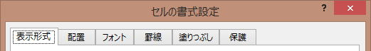

最終更新日：2019-08-25
セルの操作
・RangeとCells
・セルにデータを入力する
・セルのデータを取得する
・セルの書式設定
【ここでのポイント】
1つのセルまたはセル範囲を指定する方法は何通りもあります。
セルはExcelの基本中の基本ですので、VBAではいろいろな指定方法が用意されています。
複数の指定方法があるために覚える事を難しくしている面もあります。
しかし、セルをしっかりと理解せずにVBAを理解することはできません。
セルのいろいろな指定方法と、良く使われるプロパティ・メソッドを覚えて下さい。
ここの内容は、実に多くの内容を含んでいるため、試験勉強レベルで覚えきれるものではありません。
逆に考えれば、あまり細かいことは出題しづらいとも言えます。
公式テキストおよび以下で説明している部分を重点的に覚えるようにして下さい。
RangeとCells
セルはVBAではRangeオブジェクトです。
Rangeオブジェクトは、セルのオブジェクトであり、セルの集合体でコレクションでもあります。
ワークシートは、その数を増減できます。
1つのワークシートを表すオブジェクトとしてWorkSheetオブジェクトがあり、
集合体としてのコレクションがWorkSheetsコレクションとして用意されています。
対してセルはどうでしょうか。
シートのセルの数を増減させることはできません、行数も列数も一定です。
Rangeオブジェクトは、シート全体のセルの集合としてのコレクションになります。
そして、シート内の位置を指定することで、1つのセルや複数のセルを表すことができるようになっています。
シート内の、1つまたは複数のセル範囲を指定する方法がいくつも用意されています。
Range ・・・ 主に固定位置のセル範囲を指定する時に使います
Cells ・・・ 行、列を数値で指定できるので、変数でセル位置を変化させる時に使います
ActiveCell ・・・ アクティブセルです、ワークシートに1つのみ
Rows ・・・ 行全体
Columns ・・・ 列全体
UsedRange ・・・ ワークシートで使用されているセル範囲
RangeとCellsが最も良く使われるものなので、この2つはしっかり覚えて下さい。
その他は、使用頻度は低いのですが、どのセルを指定しているものかは覚えておく必要があります。
Range ・・・ 主に固定位置のセル範囲を指定する時に使います
1つのセルを指定
セル番地を"ダブルクォーテーションで囲んで指定します。
Range("A1")
セル範囲（複数のセル）を指定
:（コロン）で区切って、始点と終点を指定
Range("A1:C5")
A1からC5のセル範囲
,（カンマ）で区切って、始点と終点を指定
Range(始点セル, 終点セル)
Range("A1","C5")A1からC5のセル範囲
"（ダブルクォーテーション）の中で、,（カンマ）で区切って飛び飛びのセルを指定
Range("A1,C5")
A1セルとC5セルになります。
行全体を指定
Range("1:1")
1行目全体
Range("1:5")
1から5行全体
Range("1:1","5:5")
1から5行全体
Range("1:1,5:5")
1行目全体と5行目全体
下の2つの指定は、普通は使う事はありません。
ですが、Rangeの指定方法を理解する意味で、いろいろなパターンを見ておいてください。
列全体を指定
Range("A:C")
AからC列全体
Range("A:A","C:C")
AからC列全体
Range("A:A,C:C")
A列全体とC列全体
名前定義で指定
Range("名前定義の名前")
名前定義で定義されたセル範囲
Cells ・・・ 行、列を数値で指定できるので、変数でセル位置を変化させる時に使います
行、列を数値で指定することで、1つのセルを指定します。
Cells(行, 列)
行は、縦の行位置です、１行目は1、10行目は10です。
列は、横の列位置です、A列は1、J列は10です。
列の指定については、"A"とか"J"とかの指定も可能です。
Cells(1, 1)
Cells(1, "A")
これは、A1セルになります。
Cells(5, 3)
Cells(5, "C")
これは、C5セルになります。
Range("C5")と比べると、行列の指定順序が逆になっています。
Rows ・・・ 行全体
数値で行数を指定することで、行全体を指定します。
Rows(行)
Rows(5)
これで、５行目の全体になります。
Rows("1:5")
と指定すれば、1～5行の５行になります。
数値が１つだけの時は、"（ダブルクォーテーション）が不要です。
Columns ・・・ 列全体
数値またた列記号で指定することで、列全体を指定します。
Columns(列)
Columns(3)
これで、3列目、つまりC列の全体になります。
Cellsと同様に、
Columns("C")
でも指定できます。
複数列範囲の指定も可能です。
Columns("A:C")
これで、A列～C列の３列の指定になります。
Rangeと他の組み合わせ
Rangeに、Cells、Rows、Columnsを組み合わせて使えます。
Range(始点セル, 終点セル)
この始点セル、終点セルに、
Cells、Rows、Columns
これらを使ってセル範囲を指定できます。
Range(Cells(1, 1), Cells(3, 5))
A1からE3セルになります。
Range(Rows(1), Rows(3))
1から3行め全体になります。
Rows(Columns(1),Columns(3))
AからC列全体になります。
ワークシートの指定
Range、Cells、Rows、Columns
これらだけの指定では、どのワークシートなのかの記述が省略されています。
本来は、ワークシートを指定して、
WorkSheets("Sheet2").Cells(2, 2)
このようにワークシートを指定するようにします。
複数ブックを扱う場合は、さらにブックも指定して、
WorkBooks("Book1.xlsm").WorkSheets("Sheet2").Cells(2, 2)
ワークシートを指定せずに、
Range、Cells、Rows、Columns
これらだけを指定した場合、どのシートのセルになるかがモジュールによって違ってきます。
標準モジュールでは、アクティブシートになります。
シートモジュールでは、記述したシートになります。
セルにデータを入力する
セルに値を入れる
セルに文字を入れる場合は、
Range("セルの番地") = "入れる文字"
文字は、"ダブルクォーテーションで囲みます。
数値は、そのまま記述します。
Range("B2") = "こんにちは"
Range("B3") = 123
これで、
B2セルに、「こんにちは」
B3セルに、「123
」と入ります。
セルは、色々な側面を持っています。
表示する文字、文字の大きさ、文字の色、背景色、罫線等々
セルの何を、どのようにしたいのか・・・
ここでは、セルの値に、文字を入れています。
値はValueであり、本来は、
Range("セル番地").Value = "文字"
↑ ↑ ↑
セル の 値 に 文字を入れる。
のように書きます。
ただし、.Valueは、書かなくても良いのです。
つまり、Valueは省略時の既定のプロパティだということです。
値以外を扱う場合、例えば、文字の大きさを指定する時は、
Range("セルの番地").Font.Size = 11
このように、プロパティの指定が必要です。
セルはオブジェクト、Valueはプロパティです。
オブジェクト のプロパティに値を入れる。
↓ ↓ ↓
Range("セル番地").Value = "文字"
↑ ↑ ↑
セル の 値 に 文字を入れる。
RangeオブジェクトのValueプロパティに文字を入れています。
オブジェクト.プロパティ = 値
オブジェクト式の、プロパティの値の設定になります。
セルに値ではなく、数式（計算式）を入れることが出来ます。
数式を設定できるプロパティ
.Value
.Formula
.FormulaLocal
.FormulaR1C1
.FormulaR1C1Local
.Value
文字・数値をセルに入れる場合に使用してきましたが、
計算式も入れる事が出来ます。
A1セル = B1セル + C1セル
Range("A1").Value = "=B1+C1"
シートで入力する時と同様に、
先頭に
=を付けて計算式を指定すれば良いです。
関数でも同じです。
A1セル = B1～B10セルの合計
Range("A1").Value = "=SUM(B1:B10)"
.Formula
.FormulaLocal
.FormulaR1C1
.FormulaR1C1Local
これが解りづらいかもしれません。
計算式をR1C1参照形式で指定します。
R1C1参照形式
セルの相対位置、つまり、計算式を設定しようとしているセルからの移動量を、
行位置をRに続けて記述し、列位置をCに続けて記述します。
R ・・・ Rの後に何も記述しない場合は同一行
C ・・・ Cの後に何も記述しない場合は同一列
R1 ・・・ Rの後に数値のみ記述した場合はその絶対行数
C1 ・・・ Cの後に数値のみ記述した場合はその絶対列数
R[1]・・・ Rに続けて[数値]とした場合は、数値行数分、行位置をづらした行
C[1]・・・ Cに続けて[数値]とした場合は、数値列数分、列位置をづらした列
これらを組み合わせて、計算式を設定するセルからの位置を指定します。
試験範囲として入っているのかどうか不明確です。
公式テキストには書かれていません。
少なくとも、ベーシックでは出題されないとは思いますが、
VBAをやっていく上では、いずれは覚えた方が良いものです。
例．C5セルに計算式を設定する場合
RC1 ・・・ A5セル
R1C ・・・ C1セル
R[1]C[2] ・・・ E6セル
RC[-1] ・・・ B5セル
Localについて
Localと付くものは、PC環境に依存する設定を有効にする場合です。
計算式ではそんなに多くはないですが、あるにはあります。
例えば、JIS関数を設定するなら、Localを使わないとエラーとなります。
それぞれの違い（Localは除く）
Range("A1").Value = "=B1+C1"
Range("A2").Formula = "=B1+C1"
Range("A3").FormulaR1C1 = "=B1+C1"
Range("A4").Value = "=RC[1]"
Range("A5").Formula = "=RC[1]"
Range("A6").FormulaR1C1 = "=RC[1]"
上記では、A3セルのみ正しく設定されません。
R1C1の場合は、R1C1参照形式で設定する必要がある訳ですが、当然ですね。
何故、こんなに多くのプロパティが存在しているのか
それは、設定する時ではなく、その設定された計算式を参照する時に使うからです。
以下の設定をした場合、
Range("A1").Value = "=B1+C1"
設定後に、それぞれのプロパティを参照すると、
Range("A1").Value ・・・ 計算結果の値
Range("A1").Formula ・・・ =B1+C1
Range("A1").FormulaR1C1 ・・・ =RC[1]
のように、参照結果が違ってきます。
セルのデータを取得する
セルのデータには、いくつかの側面があります。
セルに12345
と入れても、
表示形式によって、見た目は、
12,345
12345
千単位にしていれば、
12
という事もあります。
また、日付を入れた場合、
2018/2/20
見た目は、
2018/2/20
2018/02/20
2018年2月20日
等々、表示形式によって見た目はかなり違ってきます。
さらに、表示形式が標準や数値の場合には、
43151
と表示されている場合もあります。
さらに、上で説明したように、計算式を取得することもできます。
データを取得するプロパティ
セルのデータ（値）を取得するプロパティとして、以下の3つがあります。
Value
Value2
Text
ValueとValue2の違いは、
Value2プロパティでは、通貨型 (Currency) および日付型 (Date) のデータ型を使用しない点のみが、Value プロパティと異なります。
値を、倍精度浮動小数点型 (Double) をで返します。
Textは、
セルの見た目を文字列として返します。
Textプロパティは、
読み取り専用です。
例
表示形式が"m"月"d"日"のセルに
2018/2/20
と入っている場合、
Valueは、2018/2/20 ・・・ 日付型として取得されます。
Value2は、43251 ・・・ 倍精度浮動小数点型 (Double) で取得されます。
Textは、2月20日 ・・・ 文字列型で取得されます。
セルの書式設定
セルの書式には、
・表示形式
・配置
・フォント
・塗りつぶし
・罫線
これらがあります。

それぞれに複数のプロパティがありますので、
全てのプロパティとその設定値を覚えることはかなり大変なことです。
ですが、全てを覚えることはありませんが、一通りどのようなものがあるかくらいは見ておきましょう。
第31回．セルの書式（表示形式,NumberFormatLocal）セルは表示形式を指定することで、セルに入っている値は同じ値でも色々な見え方をさせる事が出来ます。セルの値はそのままで、見た目だけをユーザーに見やすい形にすることが出来ます。同じ数値の、12345でも 12345、12,345、\12,345 等々の違う表示方法を指定する事が出来ます。
第32回．セルの書式（配置,Alignment）セル内での値を表示する位置（縦位置、横位置）をマクロVBAで指定できます。「セルの書式設定」→「配置」で指定する内容です。マクロVBAでの配置の指定 Range.プロパティ=設定値 指定できるプロパティの設定値は以下になります。
第33回．セルの書式（フォント,Font）セルで表示している文字の書体をマクロVBAで指定する方法です。セル（Rangeオブジェクト）のフォントは、Fontプロパティになります。Fontプロパティは、Fontオブシェクトを返します。解りづらい説明だと思います。
第34回．セルの書式（塗りつぶし,Interior）セルを目立たせる最も有効な手段は、セルを色で塗りつぶすことでしょう、セルを塗りつぶす時のマクロVBAの解説です。セル（Rangeオブジェクト）の塗りつぶし（パターン）は、Interiorプロパティになります。Interiorプロパティは、Interiorオブシェクトを返します。
第35回．セルの書式（罫線,Border）VBAで罫線を引く必要が出てくる場合も度々あります、シートのデータ範囲がマクロで変更されてしまう場合は、罫線を引き直す事が必要になってきます。ネット等を検索すると、罫線を引くマクロは書き方が千差万別となっているようです。そして、マクロの記録を使用して作成したVBAコードをそのまま使っている最悪のケースも散見されます。
試験対策としては、
表示形式、フォント、塗りつぶし
このあたりの、良く使われる基本的な設定くらいで良いのではないかと思います。
必須として覚えておくこと
Range("A1").NumberFormat = "#,###"
Range("A1").NumberFormat = "#,##0"
Range("A1").NumberFormat = "yyyy/mm/dd"
Range("A1").NumberFormat = "@"
Range("A1").Font.Size = 14
Range("A1").Font.Bold = True
Range("A1").Font.Color = vbRed
Range("A1").Interior.Color = vbRed
このくらいが、先に書いたページを参考に理解できていれば十分だと思います。
Rangeオブジェクトの、その他のプロパティ、メソッド
Rangeオブジェクトには、多数のプロパティ、メソッドがあります。
Rangeのプロパティ一覧エクセルの基本である、Rangeオブジェクトのプロパティの一覧です。太字リンク付きは、詳細解説ページ、または、応用したVBAコードがあるページにリンクしています。Excel2010までのRangeオブジェクトのプロパティ一覧 Excel2016で追加されたRangeオブジェクトのプロパティ一覧 CommentThreaded 範囲の左上隅のセルに関連付け…
Rangeのメソッド一覧エクセルの基本である、Rangeオブジェクトのメソッドの一覧です。太字リンク付きは、詳細解説ページ、または、応用したVBAコードがあるページにリンクしています。Excel2010までのRangeオブジェクトのメソッド一覧 Excel2013で追加されたRangeオブジェクトのメソッド一覧 FlashFill Trueは、
とても、全てをおぼえられるものではありません。
以下では、良く使われるもの、試験に出る可能性のあるものを選びました。
詳細説明は、
マクロVBA入門の各ページをお読みください。
VBAはExcelの操作を自動化するマクロ機能で使われているプログラミング言語です。「VisualBasicforApplications」の略になります。マクロVBA入門シリーズでは、始めはより詳しく丁寧に解説し、少しずつ難易度を上げることで無理なく学習を進められるようにしています。
Addressプロパティ
第84回.Rangeのプロパティ（Address）Addressプロパティは、セル範囲（Rangeオブジェクト）の参照範囲を表す文字列の値を返します。引数により、参照方法（$の付いた絶対参照）や形式（R1C1形式）を指定できます。Addressは、VBAの中で処理の一環として使う事はあまり多くないかもしれませんが、VBA作成過程ではRangeオブジェクト変数のアドレス確認に使う事もあり、
Offsetプロパティ
第83回．Rangeのプロパティ（Offset）Offsetプロパティは、指定されたセル範囲（Rangeオブジェクト）をオフセット（移動）します、オフセット（移動）したセル範囲を表すRangeオブジェクトを返します。Offsetとは、「差し引きする」意味ですが、Offsetプロパティで取得されるのは、元のRange範囲を、指定した行数・列数移動したRange範囲になります。
Resizeプロパティ
第82回．Rangeのプロパティ（Resize）Resizeプロパティは、指定されたセル範囲（Rangeオブジェクト）のサイズを変更します、そして、サイズが変更されたセル範囲(Rangeオブジェクト)を返します。サイズ変更は、縦方向の行数、横方向の列数の両方またはどちらか一方を指定できます。
Activateメソッド
Selectメソッド
第28回．セル・行・列の選択（Select,Activate）マクロVBAで、セル、行、列を選択するときの記述について説明します。まずは、セルの選択について説明する前に、選択セルとアクティブセルについて、説明する必要があります。選択セルとアクティブセル この状態で、選択セルは、B2～C6の10個のセルです。
Clearメソッド
ClearContentsメソッド
第39回．セルのクリア（Clear）セルをクリアするマクロVBAの書き方です、クリアするといっても、セルの何を（値、色、コメント等々）クリアするかによって、VBAコードが違ってきます。具体的には、セルの何を（値、色、コメント等々）クリアするかによって使用するメソッドが変わるという事です。
Copyメソッド
Cutメソッド
第40回．セルのコピー・カット&ペースト（Copy,Cut,Paste）あるセルをコピーまたはカットして、別のセルに貼り付けるVBAの説明です。セルを同じシートの別のセルにコピーしたり、セルを別のシートにコピーしたりするVBAになります。手作業で、セルをコピー(Ctrl+C)またはカット(Ctrl+X)して、他のセルに貼り付け(Ctrl+V後にESCまたはEnter) これと同じ動作をするVBAになります。
第41回．セルのコピー&値の貼り付け（PasteSpecial）値の貼り付けと題しましたが、値だけではなく、「形式を選択して貼り付け」のいろいろな指定方法です。セルをコピーして、他のセルに「形式を選択して貼り付け」する場合のマクロVBAコードです。セルの値や書式を別のセルにコピーすることはマクロVBAでは定番かつ必須の技術になります。
Deleteメソッド
Insertメソッド
第29回．セル・行・列の削除・挿入（Delete,Insert）単一セルまたは複数セルの削除・挿入と行・列の削除・挿入についてのVBAを解説します。単一セルまたは複数セルを指定しての行全体・列全体に対する削除・挿入と、行・列を指定しての削除・挿入は結果としては同じ事になりますが、VBAの書き方には違いがあり、実際のVBAでは使い分けが必要になる場合があります。
上記以外にも、多くの重要なプロパティ、メソッドが多数ありますが、試験に出る可能性は低いと思います。
Valueプロパティの省略 ・・・ リニューアル対応
以下で詳しく説明していますので、必ず目を通しておいてください。
Rangeオブジェクト.Valueの省略について｜VBA技術解説エクセルVBAを教えていて、これほど多く聞かれる質問はないでしょう、RangeやCellsの.Valueは省略したほうが良いか、書いた方が良いか、当然、省略出来ない場合もあれば、オブジェクトとして扱うために.Valueは書けない場合もあります。ですので、結論から言えば、書きたければ書けば良いし、書きたくなければ書かなくて良い。
最終セルを特定する ・・・ リニューアル対応
以下で詳しく説明していますので、必ず目を通しておいてください。
第18回.最終行の取得（End,Rows.Count）｜マクロVBA入門Excelワークシートにおける表の最終行の取得は、VBAの必須技術になります、エクセルVBAにおける最終行取得の必要性 エクセルは表計算ソフトです、つまり縦横の表を扱います、データは横に項目があり、縦に項目に対するデータが入っている事が一般的です。しかし、そのデータ行数は決まった行数ではない事が普通です。
最終行・最終列の取得方法（End,CurrentRegion,SpecialCells,UsedRange）｜VBA技術解説エクセルの表をVBAで扱う時は、データ部分の先頭から最終行までの、開始列から最終列まで処理する事が多いでしょう。開始行や開始列は、ほとんどの場合、見出し行や見出し列の次からになります。単純な話として、１行目に見出しがあれば、２行目から １列目に見出しがあれば、２列目から では、ここで、最終行や最終列は、
【業務改善の実務】
業務改善の実務では、最も重要な部分と言っても良いでしょう。
Rangeオブジェクトのプロパティ、メソッドをいかに使いこなせるかにかかっていると言っても良いでしょう。
しかし、だからこそ奥が深く難しいという事になります。
VBAを一通り覚えた後は、
Rangeオブジェクトのプロパティ、メソッドをすこしずつ増やしていくことで、VBAスキルアップをしていってください。
先にも書きましたが、試験対策としては出題されそうな部分を重点的に覚えれば良いのですが、
実務としては、どのような事ができるかを広く知っておくことのが重要です。
実務は試験ではないので、分からないことは必要な時に調べれば良いのです。
しかし、そもそも何が出来るかを知らなければ調べようともしなくなってしまいます。
VBAでは、手作業で出来ることは全てできます。
従って、そもそものExcelの操作全般をしっかり覚えることが最優先です。
操作できるのなら、自動記録でVBAコードは調べることが出来るからです。
【本サイト内の関連ページ】
第11回.RangeとCellsの使い方VBAではセルを指定する方法としてRangeとCellsがあります、RangeもCellsも、どちらもRangeオブジェクトでセルを指定するものです。どちらを使ったらよいのでしょうか、どう使い分けたらよいのでしょうか、実際のVBA記述では、RangeとCellsを使い分ける必要があります、RangeとCellsの使い方・使い分け方について解説をします。
第56回．RangeオブジェクトRangeとCells特集にします。今さら…と、あなどるなかれ、結構奥が深いのです。すでに説明した内容もありますが、知っておいた方が良い事、知らなくても困らない事（笑） これらを、まとめてみました。まずは基本 A1セルに"エクセル"と入れる場合。
RangeとCellsの深遠RangeとCells特集にします。今さら…と、あなどるなかれ、結構奥が深いのです。すでに説明した内容もありますが、知っておいた方が良い事、知らなくても困らない事（笑） これらを、まとめてみました。まずは基本 A1セルに"エクセル"と入れる場合。
だまされるな！RangeとCellsの使い分け！ネットを見ていると、Range("A"&i) と言う記述を良く見かけます。初心者の方が、マクロの自動記録を見て、記録されたマクロを自分で工夫して、行数を変数にしたというのなら素晴らしい事です。しかし、マクロについて、かなり手慣れた人や、時にはExcelマクロの指導的立場にいる人が、
VBAエキスパート公式テキスト
2019/5/30発売
リニューアル版
2019/7/26発売
リニューアル版
こちらは必須として購入した方が良いでしょう。
ちょっと高いなーとは思いますが、
書籍を購入することで、学習用データが提供されています。
・サンプルブック
・VBAエキスパート模擬問題
これらが使えるようになります。
このシリーズでは、
テキストを読みながら学習していることを前提とします。
このサイトがお役に立ちましたら「シェア」「Bookmark」をお願いいたします。
記述には細心の注意をしたつもりですが、
間違いやご指摘がありましたら、「お問い合わせ」からお知らせいただけると幸いです。
掲載のVBAコードは動作を保証するものではなく、あくまでVBA学習のサンプルとして掲載しています。
掲載のVBAコードは自己責任でご使用ください。万一データ破損等の損害が発生しても責任は負いません。